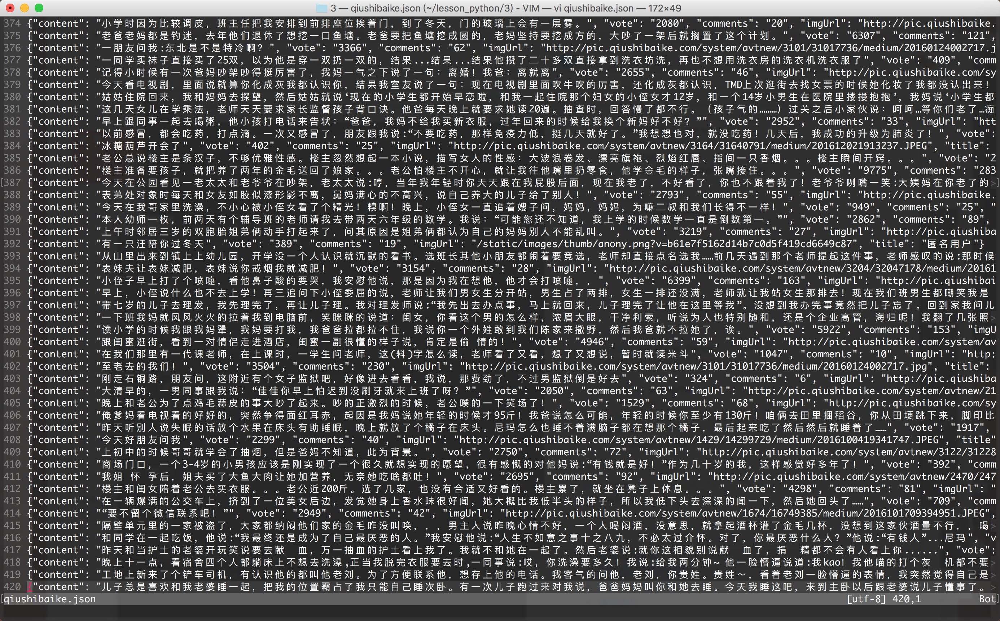

多线程糗事百科案例
案例要求参考上一个糗事百科单进程案例
Queue（队列对象）
Queue是python中的标准库，可以直接import Queue引用;队列是线程间最常用的交换数据的形式
python下多线程的思考
对于资源，加锁是个重要的环节。因为python原生的list,dict等，都是not thread safe的。而Queue，是线程安全的，因此在满足使用条件下，建议使用队列
初始化： class Queue.Queue(maxsize) FIFO 先进先出
包中的常用方法:
Queue.qsize() 返回队列的大小
Queue.empty() 如果队列为空，返回True,反之False
Queue.full() 如果队列满了，返回True,反之False
Queue.full 与 maxsize 大小对应
Queue.get([block[, timeout]])获取队列，timeout等待时间
创建一个“队列”对象
- import Queue
- myqueue = Queue.Queue(maxsize = 10)
将一个值放入队列中
- myqueue.put(10)
将一个值从队列中取出
- myqueue.get()
多线程示意图

# -*- coding:utf-8 -*-
import requests
from lxml import etree
from Queue import Queue
import threading
import time
import json
class thread_crawl(threading.Thread):
'''
抓取线程类
'''
def __init__(self, threadID, q):
threading.Thread.__init__(self)
self.threadID = threadID
self.q = q
def run(self):
print "Starting " + self.threadID
self.qiushi_spider()
print "Exiting ", self.threadID
def qiushi_spider(self):
# page = 1
while True:
if self.q.empty():
break
else:
page = self.q.get()
print 'qiushi_spider=', self.threadID, ',page=', str(page)
url = 'http://www.qiushibaike.com/8hr/page/' + str(page) + '/'
headers = {
'User-Agent': 'Mozilla/5.0 (Windows NT 10.0; WOW64) AppleWebKit/537.36 (KHTML, like Gecko) Chrome/52.0.2743.116 Safari/537.36',
'Accept-Language': 'zh-CN,zh;q=0.8'}
# 多次尝试失败结束、防止死循环
timeout = 4
while timeout > 0:
timeout -= 1
try:
content = requests.get(url, headers=headers)
data_queue.put(content.text)
break
except Exception, e:
print 'qiushi_spider', e
if timeout < 0:
print 'timeout', url
class Thread_Parser(threading.Thread):
'''
页面解析类；
'''
def __init__(self, threadID, queue, lock, f):
threading.Thread.__init__(self)
self.threadID = threadID
self.queue = queue
self.lock = lock
self.f = f
def run(self):
print 'starting ', self.threadID
global total, exitFlag_Parser
while not exitFlag_Parser:
try:
'''
调用队列对象的get()方法从队头删除并返回一个项目。可选参数为block，默认为True。
如果队列为空且block为True，get()就使调用线程暂停，直至有项目可用。
如果队列为空且block为False，队列将引发Empty异常。
'''
item = self.queue.get(False)
if not item:
pass
self.parse_data(item)
self.queue.task_done()
print 'Thread_Parser=', self.threadID, ',total=', total
except:
pass
print 'Exiting ', self.threadID
def parse_data(self, item):
'''
解析网页函数
:param item: 网页内容
:return:
'''
global total
try:
html = etree.HTML(item)
result = html.xpath('//div[contains(@id,"qiushi_tag")]')
for site in result:
try:
imgUrl = site.xpath('.//img/@src')[0]
title = site.xpath('.//h2')[0].text
content = site.xpath('.//div[@class="content"]/span')[0].text.strip()
vote = None
comments = None
try:
vote = site.xpath('.//i')[0].text
comments = site.xpath('.//i')[1].text
except:
pass
result = {
'imgUrl': imgUrl,
'title': title,
'content': content,
'vote': vote,
'comments': comments,
}
with self.lock:
# print 'write %s' % json.dumps(result)
self.f.write(json.dumps(result, ensure_ascii=False).encode('utf-8') + "\n")
except Exception, e:
print 'site in result', e
except Exception, e:
print 'parse_data', e
with self.lock:
total += 1
data_queue = Queue()
exitFlag_Parser = False
lock = threading.Lock()
total = 0
def main():
output = open('qiushibaike.json', 'a')
#初始化网页页码page从1-10个页面
pageQueue = Queue(50)
for page in range(1, 11):
pageQueue.put(page)
#初始化采集线程
crawlthreads = []
crawlList = ["crawl-1", "crawl-2", "crawl-3"]
for threadID in crawlList:
thread = thread_crawl(threadID, pageQueue)
thread.start()
crawlthreads.append(thread)
#初始化解析线程parserList
parserthreads = []
parserList = ["parser-1", "parser-2", "parser-3"]
#分别启动parserList
for threadID in parserList:
thread = Thread_Parser(threadID, data_queue, lock, output)
thread.start()
parserthreads.append(thread)
# 等待队列清空
while not pageQueue.empty():
pass
# 等待所有线程完成
for t in crawlthreads:
t.join()
while not data_queue.empty():
pass
# 通知线程是时候退出
global exitFlag_Parser
exitFlag_Parser = True
for t in parserthreads:
t.join()
print "Exiting Main Thread"
with lock:
output.close()
if __name__ == '__main__':
main()
